Asistimos al estreno de la obra musical “Romance Øn Line” en el Huerto Roma, un lugar que resultó ser el escenario perfecto. Rodeados de un ambiente cálido e íntimo, disfrutamos de un espectáculo que no solo entretiene, sino que invita a la reflexión profunda.
STATUS: CONECTADOS A LA FICCIÓN
La velada, llena de encanto, nos invitó a cuestionar aspectos de nuestra vida contemporánea, especialmente el exceso en el uso de la tecnología digital y cómo las interacciones moldean nuestras experiencias humanas hoy en día.
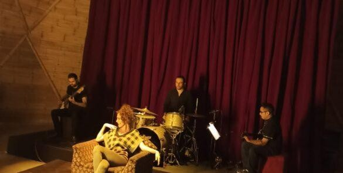
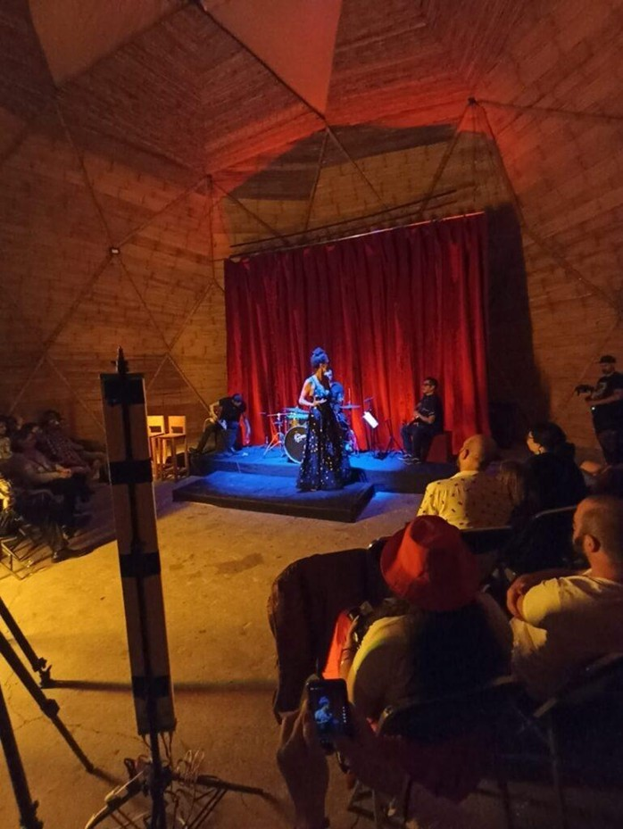
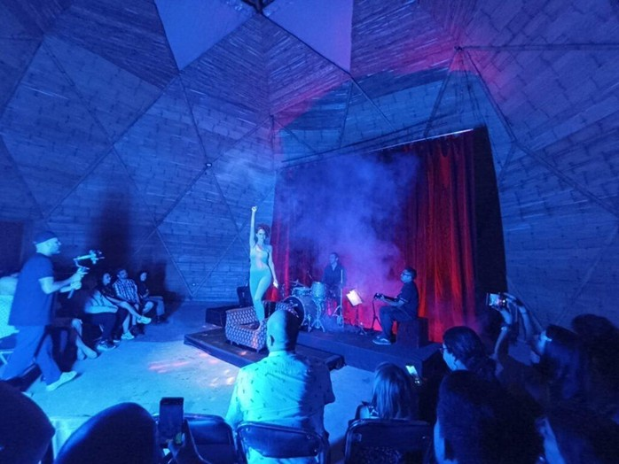
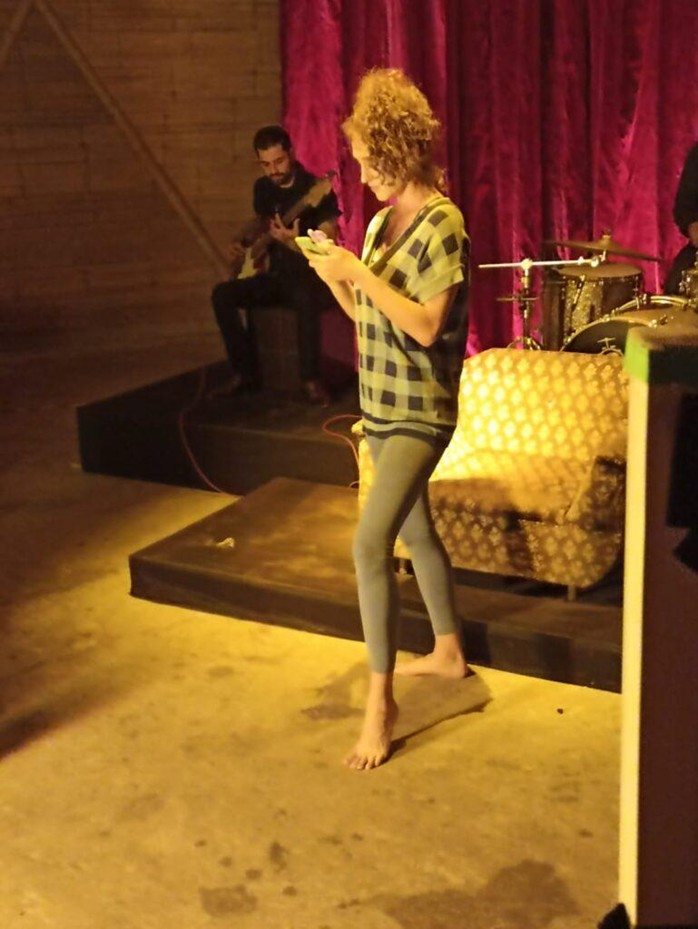
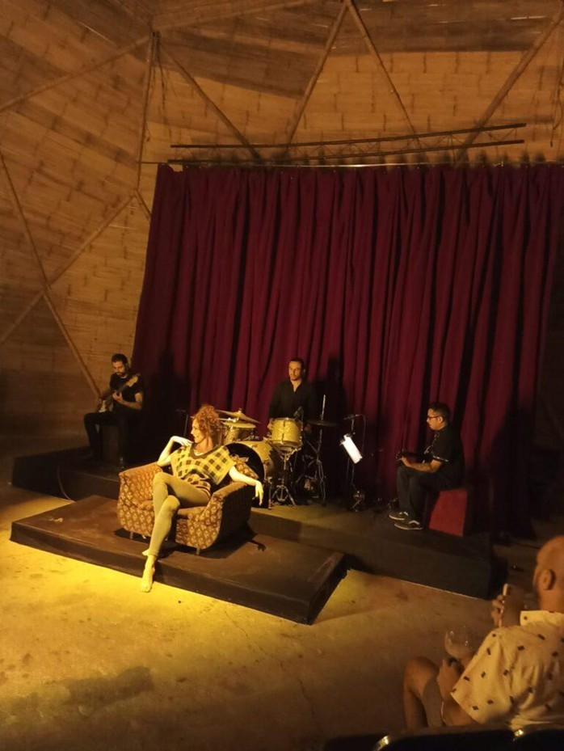
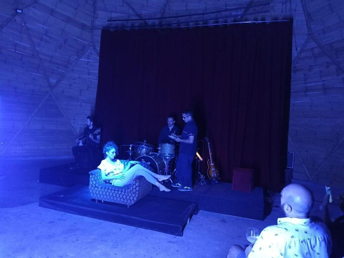
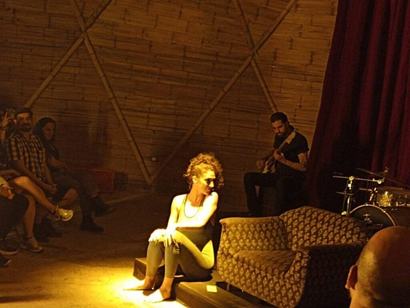
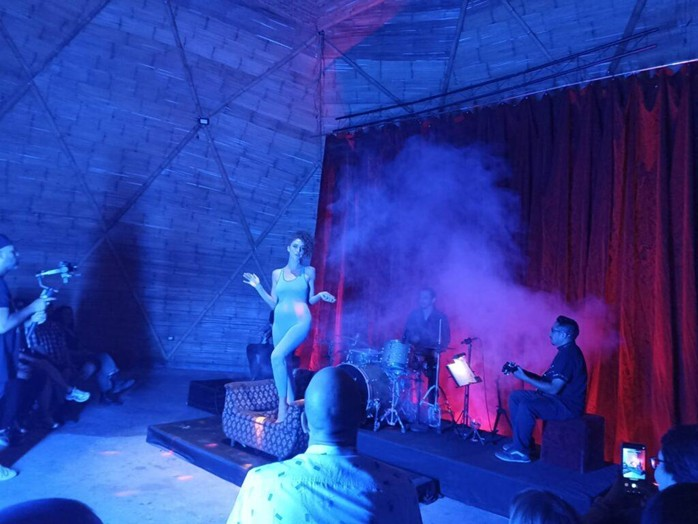
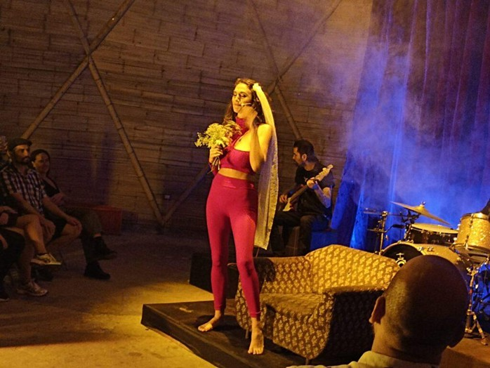
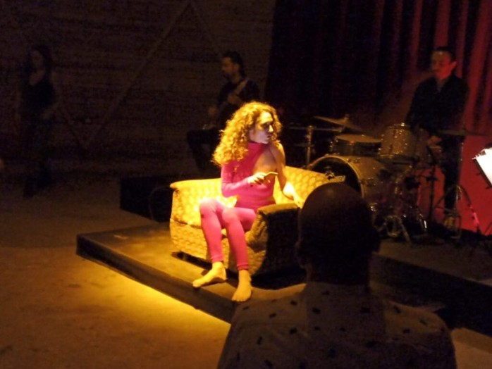
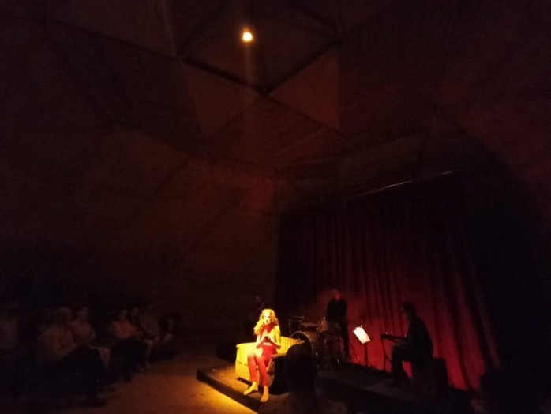
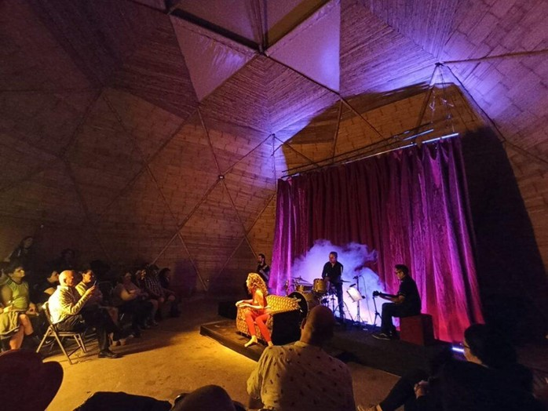
LA CATA ALEXANDER: SOCIOLOGÍA Y POP
Catalina Alexander combina la música pop con elementos teatrales y una aguda conciencia social. Su formación en Sociología le permite capturar la esencia de la era digital, fusionando jazz, blues y rock en una propuesta única junto a El Trío Secreto.
Mientras prepara su próximo EP, La Cata sigue siendo una voz resonante en la conversación sobre la cultura y el arte en la era digital. Una propuesta necesaria para desconectarse de la red y reconectarse con el arte.